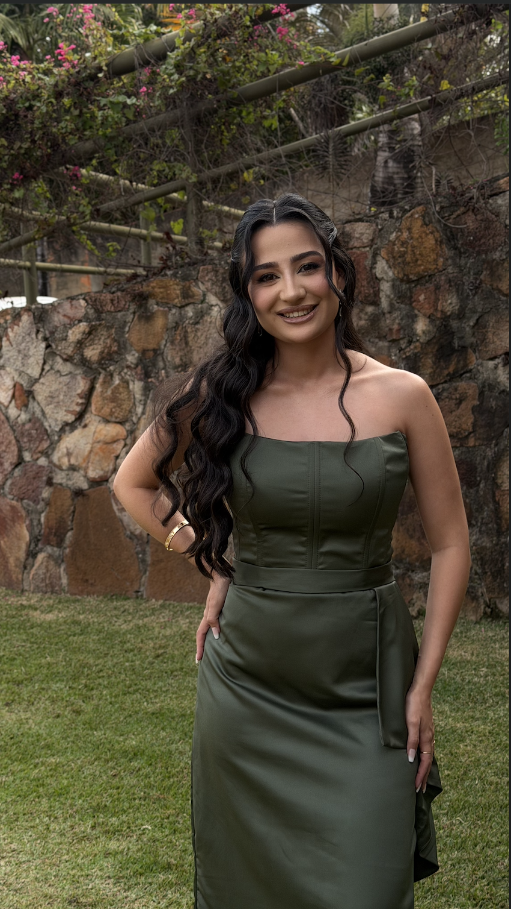
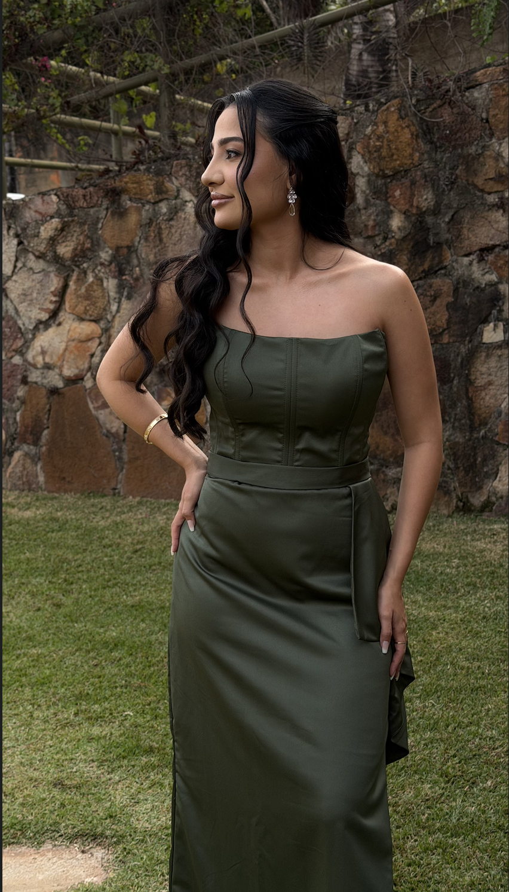

Nutrição em formação
Brasília, DF / um caderno em movimento
Entre ciência,comida &descobertas.

para a vida real.

Prazer, Nathália.
Antes de saber
as respostas,
aprender a perguntar.
A área da saúde sempre fez parte dos meus planos. Entre caminhos e descobertas, encontrei na Nutrição um interesse que quero transformar em conhecimento.
Estou na graduação e compartilho por aqui os estudos, as experiências e as perguntas que acompanham essa formação. Com curiosidade, ciência e espaço para aprender.
O ponto de partidaCuriosidade pela saúde e pelo cuidado.
A escolhaUm encontro com a Nutrição.
O agoraEstudar, experimentar e construir meu olhar.
O que alimenta
minha curiosidade.
Perguntas que levo para os estudos.
Um assunto de cada vez.
Comer também é viver.
Como a rotina, a cultura e as possibilidades de cada pessoa se encontram na alimentação?
Meu ponto de partida: observar o cotidiano e levar boas perguntas para a sala de aula.
Portulaca oleracea Beldroega
Ilustração estilizada · sem finalidade de identificaçãoDA TEORIAÀ COZINHA
Uma planta. Muitas perguntas.
Um novo olhar
para o que
pode ir ao prato.
No trabalho sobre PANC, a beldroega virou ponto de encontro entre composição dos alimentos, higiene, anatomia e Nutrição Humana.
A experiência saiu do papel com uma receita de bolinhos de beldroega na air fryer. Um jeito de conectar o estudo dos ingredientes ao preparo.
Dentro do projeto
Investigar: conhecer a PANC escolhida e pesquisar a composição dos alimentos.
Conectar: relacionar o preparo com os conteúdos estudados nas quatro disciplinas.
Experimentar: preparar os bolinhos e organizar os resultados para a apresentação acadêmica.
Uma ideia para levar comigo
Conhecimento que
sai do caderno.
Curiosidade que
fica na vida.
Essa história está só começando
Vamos descobrir
juntos?
Entre aulas, estudos e descobertas,
compartilho um pouco
dessa jornada.